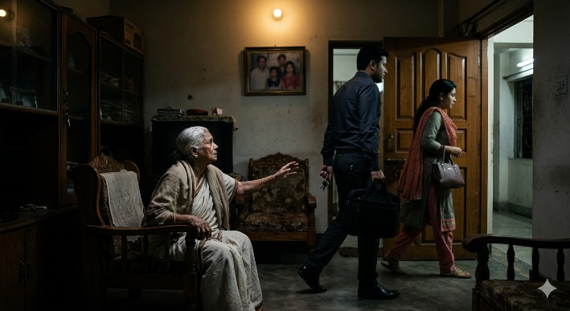
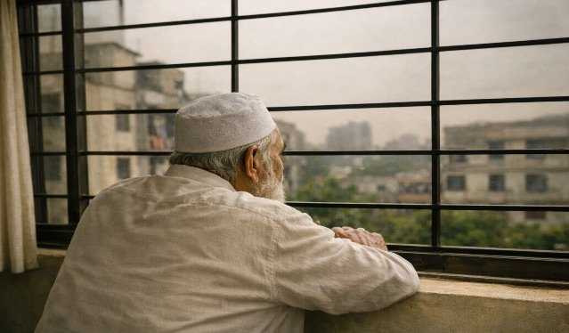
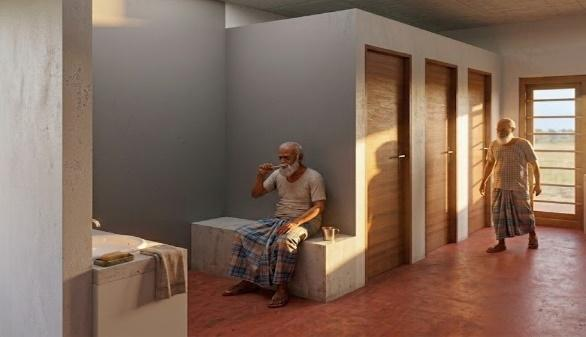
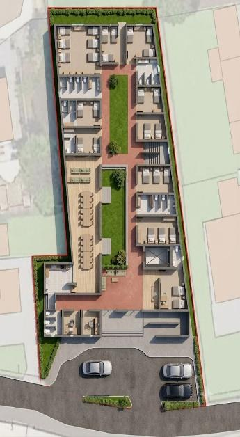

{kind=link}
{kind=link}
{kind=link}
Arrival and entrance
A single, clearly marked entrance with a gentle stepped approach leads into reception and the administrative office on the ground floor.
শেষের কবিতা আনন্দ আশ্রম — a dignified residential care and service centre for older persons
At a glance
About
Mitali Mozammel Trust seeks funding solely for the one-time construction and establishment of a two-storey residential care centre in Panchgaon Mouza, Araihazar Upazila, Narayanganj District. Following completion, affordable monthly resident fees are intended to cover routine operations, including staffing, food, utilities, and maintenance.
For you
Do your children live abroad, or have you spent your life alone? Do you now need care, company, and a safe, pleasant place to live?
If so, Shesher Kobita Ananda Ashram can be a home of your own — among people of your age, with friendship and care. From your savings you can buy, once, the lifetime residential right to a room and secure a home for the rest of your life.
The flyers are in Bengali and are illustrative; two show the earlier single-storey concept design. The terms under Support Us apply, and the correct phone number is 01994380730.
Bangladesh is ageing fast. According to World Bank data cited in the source proposal, one in every ten citizens would be aged 60 or older by 2025, and the proportion of economically dependent older persons rose from 8 per cent in 2019 to 9.4 per cent in 2023.


Shesher Kobita Ananda Ashram is designed to fill this gap: affordable, dignified accommodation for older persons who have some means but no one to care for them.
Source note: The demographic, policy, and sector figures above are reproduced from the Bengali source proposal. Although that proposal attributes demographic data to the World Bank, it does not supply full bibliographic references. Authoritative citations will be appended as part of donor due diligence.
The design places well-lit, well-ventilated rooms around a planted courtyard, so residents move easily between private rooms, shaded verandas, and shared community spaces. Wide wheelchair-accessible corridors, handrails at appropriate heights, and age-friendly design principles are applied throughout the building.
A single, clearly marked entrance with a gentle stepped approach leads into reception and the administrative office on the ground floor.
Open gardens and sitting areas, shaded by surrounding neem trees, give every wing daylight, airflow, and a place to gather outdoors.

Clean, furnished and habitable rooms with wardrobes and personal storage, arranged for both privacy and easy supervision.

A shared dining hall alongside the television room and bookshelves supports meals, conversation, and daily social life.

Wide corridors, level thresholds and handrails allow wheelchair movement and safe, unhurried walking throughout the building.


22 decimals of Trust-owned land in Panchgaon Mouza, Duptara Union, Araihazar, Narayanganj — close enough to Dhaka for regular family visits, far enough from the city to be quiet and healthy.

| Building | Two storeys, 5,500 sq ft each — 11,000 sq ft in total |
|---|---|
| Capacity | 60 older residents at one time; expandable with demand |
| Ground floor | Reception and office, dining hall and kitchen, television room, separate sick room, resident rooms |
| First floor | More resident rooms, common sitting areas, and a spacious veranda |
| Staff | 17 — CEO, superintendent-cum-accountant, 4 caregivers, 2 nurses, 3 kitchen staff, office attendant, 2 cleaners, 2 security guards, gardener; paid from residents' fees, not from this appeal |
| Schedule | Five phases over roughly 11–16 months: design, soil testing and approvals; foundation and ground floor; first floor and roof; finishing, utilities and solar; furnishing, recruitment and opening |
Budget
The budget was prepared using prevailing 2026 market rates in Bangladesh. All amounts are in Bangladeshi taka (BDT).
| Budget item / description | Quantity / basis | Estimated cost (BDT) |
|---|---|---|
| Main building — ground floor, including foundation, RCC structure, masonry, roof casting, plastering, finishing, doors and windows, electrical and water lines, and septic tank | 5,500 sq ft × BDT 2,500 | 13,750,000 |
| Main building — first floor (excluding foundation) | 5,500 sq ft × BDT 1,800 | 9,900,000 |
| Wheelchair railings and age-friendly structural adaptations | Estimated | 300,000 |
| Solar power system (panels, inverter and batteries) | Estimated | 500,000 |
| Generator backup system | Estimated | 300,000 |
| Closed-circuit cameras and security system | Estimated | 100,000 |
| Equipment for medical/sick room | Estimated | 200,000 |
| Kitchen and canteen equipment; television room | Estimated | 300,000 |
| Furniture — beds, wardrobes, chairs, tables and common-room furnishings | Estimated | 1,000,000 |
| Curtains and light interior decoration | Estimated | 300,000 |
| Contingency (approximately 5%) | Estimated | 1,332,500 |
| Total | 27,982,500 | |
Total estimated cost: BDT 27,982,500 — twenty-seven million nine hundred eighty-two thousand five hundred Bangladeshi taka (2 crore 79 lakh 82 thousand 5 hundred taka).
After construction is complete, recurring expenses — including staff salaries, food, electricity, water, and maintenance — will be financed through affordable monthly fees paid by residents. Because the centre is intended for middle- and lower-middle-income households, fees will be set at a realistic and affordable level, substantially below those charged by commercial homes for older persons.
Residents who, after a long period of residence, lose the ability to pay will be subsidised from income generated by the Sadaqah Jariyah fund described below. Under this model, once the centre has been built, it is not intended to rely on repeated annual donations. Donor contributions will therefore create a permanent institution with a pathway to operational self-reliance.
Donors may participate in the one-time construction cost through any of the following mechanisms.
A donor may secure the lifelong right to occupy a room for an older person designated by the donor. The donor deposits an agreed one-time sum with the Trust, which is added to the construction fund. In return, the designated older person receives a licensed, non-transferable right of lifelong residence — a guaranteed right to receive accommodation services; it does not transfer ownership of land or a room.
Monthly fees: the one-time payment secures the right of residence only. The Board of Trustees will determine whether monthly fees for food and day-to-day services remain payable and whether any reduction applies.
Temporary vacancy: if the resident is temporarily absent and the room is rented, the related income will be shared on the proposed basis of 75 per cent to the resident/family and 25 per cent to the Trust.
After death: the room reverts to the Trust and will be used to serve another older person in need.
A donor may sponsor a designated room in memory of a deceased parent, spouse, or other loved one. The deceased person's name will be inscribed on a plaque at the room entrance. The one-time donation is added to the construction fund.
If this programme generates a permanent fund, the fund's income will subsidise the monthly fees of older residents who lose their financial means after living at the centre for an extended period.
Spiritual significance: under Islamic Shariah, the merit of Sadaqah Jariyah continues to accrue to a donor after death for as long as the donated asset is used for public benefit.
Donors who do not wish to participate through either arrangement above may contribute directly to construction. Donations of any amount are welcome and will be applied to the most urgent item within the construction budget.
Institutional donors and businesses may also contribute through corporate social responsibility (CSR) programmes.
In accordance with the Trust deed, surplus income will be used only for social welfare, Sadaqah Jariyah subsidies, and environmental conservation, and never for private purposes. Expenditure will be reviewed at regular meetings of the Board of Trustees and presented to donors when required.
Mitali Mozammel Trust is committed to ensuring the proper use of every donation. Donors will receive regular updates on construction progress; expenditure records will be maintained; and financial use will be reviewed at regular meetings of the Board of Trustees. Separate progress reports will be made available to major donors when required.
The Trust
Mitali Mozammel Trust is a non-profit charitable organisation dedicated to the welfare of vulnerable, low-income, and older people. Its founder and lifetime Chair, Mitali Hossain, first envisioned dignified accommodation for older persons approximately a decade ago. After a long period of waiting, she decided to begin the initiative by donating her own land. That decision led to the establishment of Mitali Mozammel Trust.
The 22 decimals of land donated for the project, recorded under Deed No. 6016, have an estimated current market value of BDT 14,000,000 (1 crore 40 lakh taka). The land has already been transferred into the Trust's name as its initial capital contribution.

| Position | Name |
|---|---|
| Chair | Mitali Hossain |
| Vice-Chair | Moutusi Khandakar |
| Secretary-General | Advocate Rumana Yasmin Shaon |
| Joint Secretary | Khandakar Abul Ehsan |
| Treasurer | Kamrun Nahar |
| General Members | Joharul Mamun; Emelda Hossain; Dr Farhana Nashid Rakhi; Md Shah Ali Newaz Topu |
| Contact | Details |
|---|---|
| Mobile | 01994380730 |
| shesherkobita38@gmail.com | |
| Website | www.shesherkobita.com |
| Bank account name | Mitali Mozammel Trust |
| Account number | 3606102000763 |
| Bank and branch | Sonali Bank, Dhuptara Branch |
This English page is a translation and reformatting of the Bengali project proposal supplied by Mitali Mozammel Trust. Quantitative statements, budget figures, governance information, and visual materials are retained from that source. Renderings and plans are conceptual and subject to final design approval.